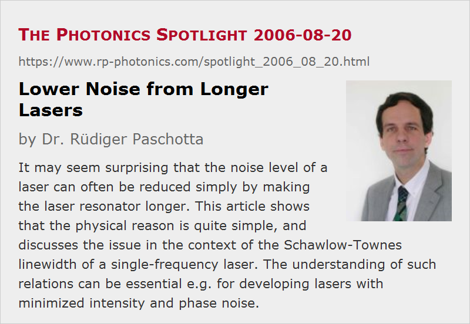

Lower Noise from Longer Lasers
Posted on 2006-08-20 as a part of the Photonics Spotlight (available as e-mail newsletter!)
Permanent link: https://www.rp-photonics.com/spotlight_2006_08_20.html
Author: Dr. Rüdiger Paschotta, RP Photonics Consulting GmbH
Abstract: It may seem surprising that the noise level of a laser can often be reduced simply by making the laser resonator longer. This article shows that the physical reason is quite simple, and discusses the issue in the context of the Schawlow-Townes linewidth of a single-frequency laser. The understanding of such relations can be essential e.g. for developing lasers with minimized intensity and phase noise.

Ref.: encyclopedia articles on laser noise, quantum noise, linewidth, Schawlow–Townes linewidth, and others
Have you been aware that the intensity and phase noise level of a laser can often be reduced simply by making the laser resonator longer? This is not true e.g. for the low-frequency intensity noise arising from pump power fluctuations, but it does hold for the high frequency intensity and phase noise, including that resulting from quantum fluctuations and from resonator length changes.
The physical reason for that is actually quite simple. Consider some effect which affects the intensity and phase of the light circulating in the laser resonator e.g. each time it passes the laser gain medium. A longer resonator, corresponding to a longer round-trip time, then means that this disturbance will alter the intracavity light fewer times per second. This is indeed one of the reasons why e.g. single-frequency laser diodes have multi-megahertz linewidths, while solid-state bulk lasers with somewhat longer resonators get down to the kilohertz region. There are other reasons, though, in particular the higher intracavity power of solid-state lasers, their lower resonator losses (and thus laser gain), and their lower linewidth enhancement factor.
As an example, consider the case of quantum noise in a single-frequency laser. Here, the disturbances in each round trip are uncorrelated, so that the variance e.g. of the optical phase grows linearly with time, and the growth rate is inversely proportional to the round-trip time. The not quite trivial math shows that this leads to a linewidth which scales in proportion to the inverse square of the cavity round-trip time (see the Schawlow–Townes formula). The same kind of scaling is obtained for resonator length fluctuations, although for somewhat different reasons.
Note that in real life it often becomes more difficult to keep a resonator stable when it is made long. Also, the reduced free spectral range may then lead to mode hops, making it more difficult to obtain stable single-frequency operation. Therefore, there may be some range of resonator lengths with best noise properties. And of course there is a number of other factors which can be optimized.
This article is a posting of the Photonics Spotlight, authored by Dr. Rüdiger Paschotta. You may link to this page and cite it, because its location is permanent. See also the RP Photonics Encyclopedia.
Note that you can also receive the articles in the form of a newsletter or with an RSS feed.
Questions and Comments from Users
Here you can submit questions and comments. As far as they get accepted by the author, they will appear above this paragraph together with the author’s answer. The author will decide on acceptance based on certain criteria. Essentially, the issue must be of sufficiently broad interest.
Please do not enter personal data here; we would otherwise delete it soon. (See also our privacy declaration.) If you wish to receive personal feedback or consultancy from the author, please contact him e.g. via e-mail.
By submitting the information, you give your consent to the potential publication of your inputs on our website according to our rules. (If you later retract your consent, we will delete those inputs.) As your inputs are first reviewed by the author, they may be published with some delay.
|  |
If you like this page, please share the link with your friends and colleagues, e.g. via social media:
These sharing buttons are implemented in a privacy-friendly way!